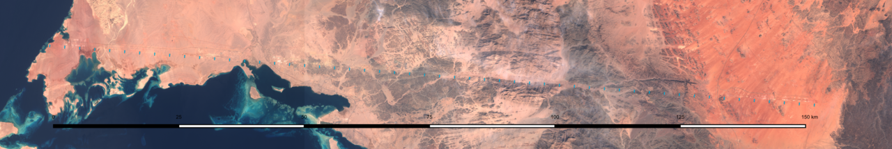
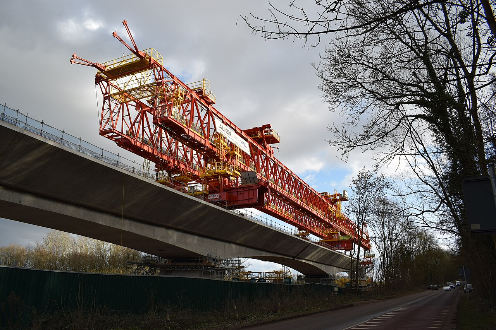
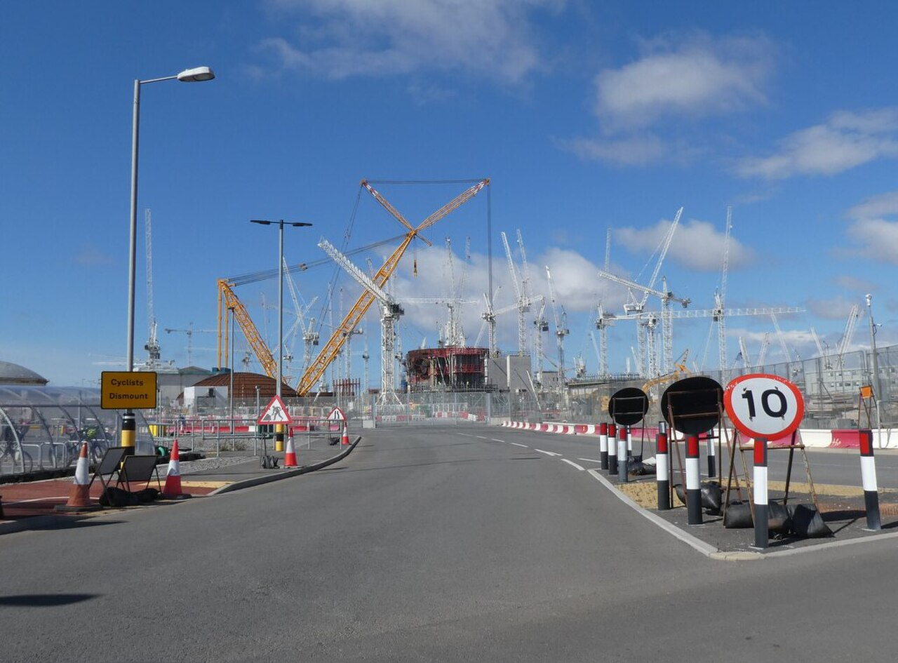

⬡
Digital Strategy & BIM Execution
BIM strategies and execution plans that align client objectives, standards and the realities of delivery — from tender through design to construction.
BIM Management & Digital Delivery
Chartered Senior BIM Manager working on some of the world's largest infrastructure programmes. I turn standards, models and data into one thing: confident decisions on site and in the boardroom.
About
I'm a Chartered Construction Manager (MCIOB) with an MEng in Civil & Structural Engineering, and I've spent 15+ years making BIM and digital construction actually work — not in slide decks, but on live mega-programmes across the UK, the Middle East and Greece.
My career has run through aviation megaprojects, national high-speed rail, nuclear new-build, water infrastructure and next-generation city development. Different sectors, same mission: get the right information, to the right people, in a form they can act on.
I believe the best information management is invisible — teams just feel that coordination is smoother, reviews are faster and nothing falls through the cracks. Getting there takes strategy, standards and a healthy obsession with automating everything that doesn't need a human.
Expertise
BIM strategies and execution plans that align client objectives, standards and the realities of delivery — from tender through design to construction.
CDE workflows, naming and metadata discipline, audits and compliance — delivered as an enabler, not a paperwork exercise. Certification-audit tested.
Federated model management, clash detection and visual walkthroughs that surface design conflicts long before they become site problems.
Constructability reviews powered by 4D simulations, point clouds and as-built verification — keeping the model honest against the ground truth.
Workflow automation, data validation apps and live dashboards that remove manual drudgery — with six-figure annual savings to show for it. BIM-to-GIS integration included.
Building and mentoring multidisciplinary BIM teams, running training and workshops, and making good practice stick across dozens of stakeholders.
Playbook
Real results from real programmes — anonymised, because that's how I work.
Designed a review-distribution engine connecting forms, email, task boards and BI dashboards for 40+ reviewers across 7 disciplines. Zero spreadsheets harmed; over $100k saved every year.
Built self-serve web apps that automatically check model element attributes against the project's component catalogue — saving £200k+ in man-hours and making quantity takeoff data trustworthy.
Pioneered cloud federated-model adoption across an entire programme, setting the standard others followed. The models I managed consistently ranked highest in active users.
Created automated flows that extract live model registers straight from the CDE and share them with every task team weekly. It became the programme-wide standard.
Programmes
The public faces of programmes I've helped deliver. Every photo is openly licensed — and the wireframes spinning beside them are original abstractions, never project data.
⟳ geometry spins as you scroll
One of the world's largest aviation programmes, rising over Riyadh. I own the BIM strategy and execution end-to-end — standards, coordination, audits and the data that keeps a megaproject honest.
Photo: B.alotaby · CC BY-SA 4.0 · Wikimedia Commons
A 170 km linear city whose construction is visible from orbit — that's it above, photographed by satellite. I reviewed digital delivery across sectors and built automation that saved six figures a year.
Image: European Space Agency · CC BY-SA 3.0 · Wikimedia Commons
Britain's new high-speed railway. I led a 10-person digital team on one of its major sections — reality-capture twins, 4D constructability and an ISO 19650 certification audit passed without a single non-conformance.
Photo: OtisVR · CC BY-SA 4.0 · Wikimedia Commons · Colne Valley Viaduct
The UK's first nuclear new-build in a generation — and a forest of cranes including the world's largest. I engineered construction-stage models and clash coordination for its most safety-critical structures.
Photo: Roger Cornfoot · CC BY-SA 2.0 · Wikimedia CommonsWhere my BIM story started: parametric Revit families, Dynamo crane-lift automation and my own delivery schemes — clarifiers, detention tanks and rising mains. No dramatic open photography exists for these, so enjoy the geometry instead. ⟲
Journey
International aviation megaprogramme, Middle East. Owning BIM strategy and execution end-to-end: standards, coordination, audits, training and data-driven reporting.
Next-generation city development, Middle East. Digital delivery reviews across sectors, standards development, and automation that saved six figures annually.
National high-speed rail programme, UK. Led a 10-person digital team; reality-capture twins, 4D constructability, and a flawless ISO 19650 certification audit.
Nuclear new-build programme, UK. Construction-stage models, clash coordination and as-built analysis for some of the most safety-critical structures in Europe.
Water infrastructure frameworks, UK. From parametric design and Dynamo automation to leading my own delivery schemes on site.
Civil/structural engineering and geomatics surveying across Greece and the UK. Where the love of measurable, model-able reality began.
Toolbox
Insights
Practical writing on information management, automation and the human side of BIM.
Compliance that teams actually thank you for — how to make the standard serve delivery instead of the other way round.
How automated attribute validation turns model data from a liability into the most trusted source on the programme.
Why geospatial context changes how stakeholders read a federated model — and how to bridge the two worlds without friction.